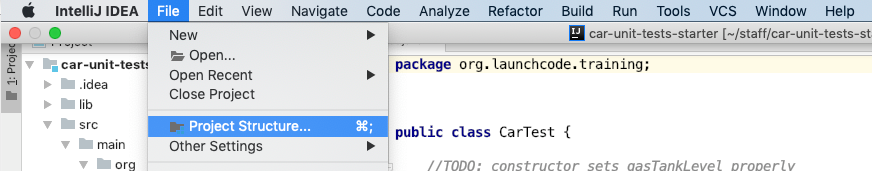

In later sections of this class we will be working with gradle, and most of this will be pre-configured for you, but it’s still necessary to know what is happening.
Project SDK & Project Language Level
SDK stands for Source Development Kit, we have to tell InteliJ which version of Java we are using, and where it exists on the machine.
- Open the Project Structure


- Set our Project language level

Main and Test Directories
IntelliJ will allow you to have complex projects, and use complicated file structures, but it needs to know which directories in your project is the source root, and where your tests reside.
- Mark the main directory as Source Root

- Mark the test directory as Test Sources Root